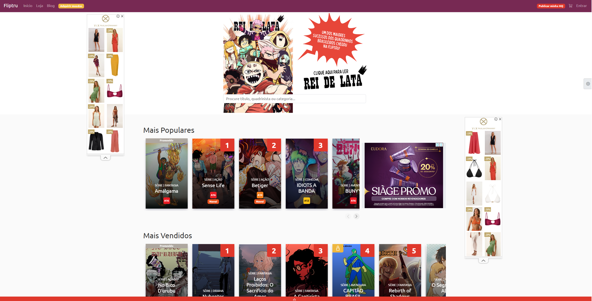

QUESTÃO IDENTIFICADA
Quadrinhos grandes demais, grupos pequenos demais.
A organização visual cria uma sensação de aperto entre os quadrinhos, enquanto algumas categorias ficam muito distantes entre si. O resultado é uma página que parece mais longa e fragmentada do que precisa ser.
AntesItens relacionados não têm distância consistente.
DepoisGrupos mais compactos e respiro controlado entre categorias.
PEÇA ORIGINALFLIPTRU — imagem fornecida

FLIPTRU
MOCKUP DIDÁTICOproximidade
Quadrinhos
Categorias